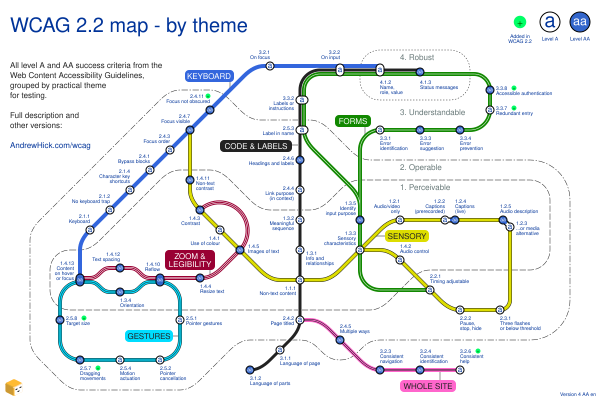

This is an extract of the WCAG map page published on AndrewHick.com/wcag. Copy and paste the following code into the main page HTML files.
↓ START OF CODE TO COPY ↓
WCAG 2.2 map by theme
This diagram groups all the success criteria from the Web Content Accessibility Guidelines (WCAG) by theme, in version 2.2, levels A and AA.
It illustrates the practical links between each criterion which may not be apparent in the guideline names. For example, all the criteria that can be tested using a keyboard are on one line. The same themes are used in WCAG for humans (a one-page summary of WCAG) and the WCAG decision tree (which helps to test for WCAG).
Other versions and languages:
Map
Update Feb 2026: This map has been redrawn in .svg (scalable vector graphics) format. If it's not working well for you, you can view the WCAG map in .png format or please let me know using the details at the end of the page. View the map code on GitHub.
{kind=link}

Description
The map resembles an underground train map, showing 55 success criteria as stations across 7 lines.
Each station marker shows whether a criterion is level A or AA. The 4 WCAG principles are depicted as zones moving outwards from the centre using dotted lines:
- 1.x.x - Perceivable (these are closest to the centre)
- 2.x.x - Operable
- 3.x.x - Understandable
- 4.x.x - Robust (furthest from the centre)
Each line is described in detail in the next sections. Some criterion names are slightly simplified within the context of level AA.
Keyboard
These criteria ensure functionality works predictably with a keyboard, having visible focus states.
The line is solid blue. It runs from west to north.
| Number | Success criterion | Level | Interchanges |
|---|---|---|---|
| 1.4.13 | Content on hover or focus | AA | |
| 2.1.1 | Keyboard | A | none |
| 2.1.2 | No keyboard trap | A | none |
| 2.1.4 | Character key shortcuts | A | none |
| 2.4.1 | Bypass blocks | A | none |
| 2.4.3 | Focus order | A | none |
| 2.4.7 | Focus visible | AA | |
| 2.4.11 | Focus not obscured new | AA | none |
| 3.2.1 | On focus | A | none |
| 3.2.2 | On input | A | |
| 4.1.2 | Name, role, value | A |
Zoom & legibility
These criteria ensure that text is:
- legible when zoomed or spaced out
- stored as text rather than just in an image
- controllable when it appears on hover or focus
The line is dark red with two inner white lines. It runs westwards from west of the centre.
| Number | Success criterion | Level | Interchanges |
|---|---|---|---|
| 1.4.3 | Contrast | AA | |
| 1.4.5 | Images of text | AA | |
| 1.4.4 | Resize text | AA | none |
| 1.4.10 | Reflow | AA | |
| 1.4.12 | Text spacing | AA | none |
| 1.4.13 | Content on hover or focus | AA |
Sensory
These criteria prevent content from being reliant on particular senses, by:
- having enough contrast
- not relying on vision, colour, hearing or timing
- avoiding audio or video distractions
The line is yellow with a black border. It mainly running from north west to east, looping back onto itself from Sensory Characteristics onwards.
| Number | Success criterion | Level | Interchanges |
|---|---|---|---|
| 2.4.7 | Focus visible | AA | |
| 1.4.11 | Non-text contrast | AA | none |
| 1.4.3 | Contrast | AA | |
| 1.4.1 | Use of colour | A | none |
| 1.4.5 | Images of text | AA | |
| 1.1.1 | Non-text content | A | |
| 1.3.3 | Sensory characteristics | A | |
| 1.2.1 | Audio/video only | A | none |
| 1.2.2 | Captions (prerecorded) | A | none |
| 1.2.4 | Captions (live) | AA | none |
| 1.2.5 | Audio description | AA | none |
| 1.2.3 | Audio description or media alternative | A | none |
| 1.4.2 | Audio control | A | none |
| 2.2.1 | Timing adjustable | A | |
| 2.2.2 | Pause, stop, hide | A | none |
| 2.3.1 | Three flashes (or below threshold) | A | none |
Code & labels
These criteria make content compatible with assistive technology by being:
- coded consistently with how it appears visually
- appropriately labelled
Forms have an additional set of criteria.
The line is black with a white border. It mainly runs from south to north.
| Number | Success criterion | Level | Interchanges |
|---|---|---|---|
| 3.1.2 | Language of parts | AA | none |
| 3.1.1 | Language of page | A | none |
| 2.4.2 | Page titled | A | |
| 1.1.1 | Non-text content | A | |
| 1.3.1 | Info and relationships | A | none |
| 1.3.2 | Meaningful sequence | A | none |
| 2.4.4 | Link purpose (in context) | A | none |
| 2.4.6 | Headings and labels | AA | none |
| 2.5.3 | Label in name | A | |
| 3.3.2 | Labels or instructions | A | |
| 3.2.2 | On input | A | |
| 4.1.2 | Name, role, value | A | |
| 4.1.3 | Status messages | AA |
Forms
These criteria help ensure usable forms that:
- do not rely on timing or sensory instructions
- have appropriate instructions and error messages
- are interactive with assistive technology
- are easy to log in and complete
The line is green with a single inner white line. It mainly runs from east of centre to the north. It loops back onto itself from Identify Input Purpose onwards.
| Number | Success criterion | Level | Interchanges |
|---|---|---|---|
| 2.2.1 | Timing adjustable | A | |
| 1.3.3 | Sensory characteristics | A | |
| 1.3.5 | Identify input purpose | AA | none |
| 2.5.3 | Label in name | A | |
| 3.3.2 | Labels or instructions | A | |
| 3.2.2 | On input | A | |
| 4.1.2 | Name, role, value | A | |
| 4.1.3 | Status messages | AA | |
| 3.3.1 | Error identification | A | none |
| 3.3.3 | Error suggestion | AA | none |
| 3.3.4 | Error prevention | AA | none |
| 3.3.7 | Redundant entry new | A | none |
| 3.3.8 | Accessible authentication new | AA | none |
Gestures
These criteria ensure that functionality:
- does not rely on gestures, dragging or motion
- works on small screens in both portrait and landscape
- reduces the risk of activating an unwanted action
The line is cyan with a black border and a black inner line. It runs in a loop in the south west.
| Number | Success criterion | Level | Interchanges |
|---|---|---|---|
| 1.4.13 | Content on hover or focus | AA | |
| 1.3.4 | Orientation | AA | none |
| 1.4.10 | Reflow | AA | |
| 2.5.1 | Pointer gestures | A | none |
| 2.5.2 | Pointer cancellation | A | none |
| 2.5.4 | Motion actuation | A | none |
| 2.5.7 | Dragging movements new | AA | none |
| 2.5.8 | Target size new | AA | none |
Whole site
These criteria need to be tested across a whole site, to ensure:
- names, menus and help mechanisms appear consistently
- pages have meaningful titles
- there is more than one way to access each page
The line is pink with two inner black lines. It runs from south to south east.
| Number | Success criterion | Level | Interchanges |
|---|---|---|---|
| 2.4.2 | Page titled | A | |
| 2.4.5 | Multiple ways | AA | none |
| 3.2.3 | Consistent navigation | AA | none |
| 3.2.4 | Consistent identification | AA | none |
| 3.2.6 | Consistent help new | A | none |
Alternatives
These amazing alternative projects use the same groupings:
- WCAG 2.2 explorer by Vicky Teinaki which is interactive and uses the same groupings.
- Figma: WCAG 2.2 Card Deck by Johannes Lehner, which adds a brief explanation of each criterion using "WCAG, but in a language I understand" by Martin Underhill
Thanks
The map concept was originally inspired by Intopia's fantastic WCAG 2.2 map with a desire to approach the criteria from an alternative angle.
Thanks to the following for their feedback and suggestions:
- Johannes Lehner for his enthusiasm throughout, coordinating the translations and translating into German
- French translation: Aymeric Tridon, Elisabeth Duranthon, Pierre-Yves Ayoul, Serena Furnari and Yasmine Benotmane
- German translation: Hanna Köhler and Johannes Lehner
- Spanish translation and guidance: Carmen Ruiz Seco
- Italian translation (Ergoproject): Michela Calanna
- Brazilian Portuguese translation: Bruno Pulis and Ana Cuentro
- Other help and suggestions: Helen Wilson (Brady), Julieanne King, Marie Cohan
Licence
Thanks for visiting! This work is licensed under Creative Commons: CC BY-NC 4.0


I'm happy for anyone to use or adapt this map but please:
- add credit, with a link back to the full accessible description on AndrewHick.com/wcag
- share or rework it accessibly (for example, add alternative text to any images)
- ask me before using it commercially
↑ END OF CODE TO COPY ↑